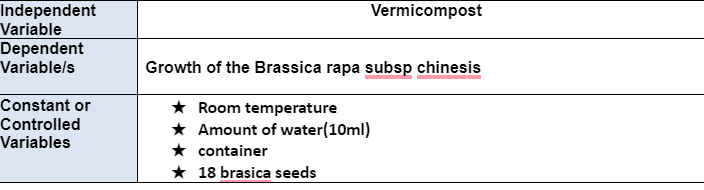
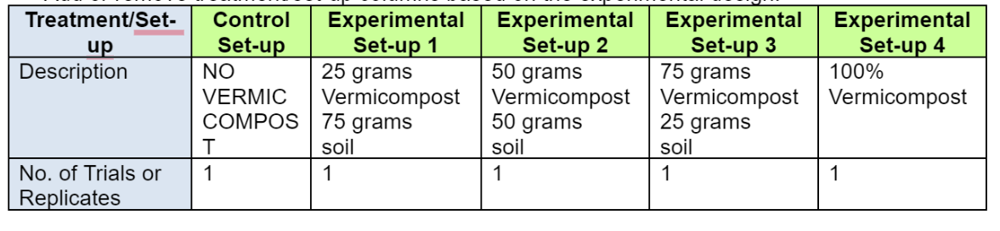
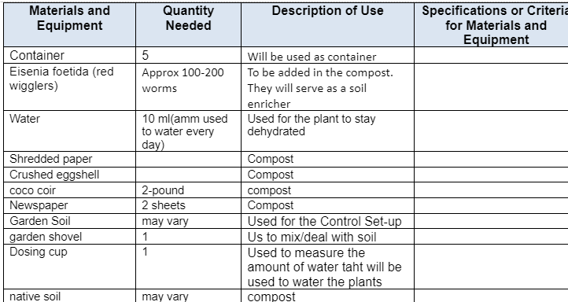
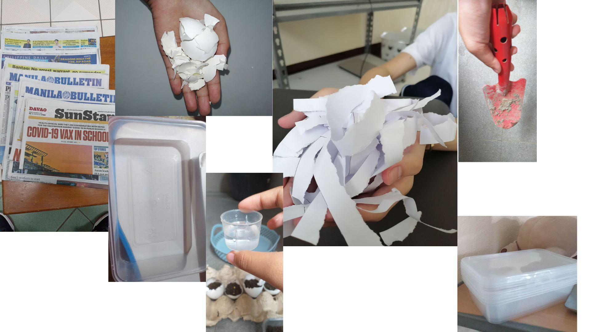

Background of the study
Madrasatos salam Al-Islamia who teaches Arabic literature and religous informarion about Islam
was formed 45 years ago,With 103 students,6 teachers, and 6 facilities. They play an important role as they
provide educational opportunity to contribute to the governments efforts to enchance peace.
The beneficaries of the Madrasatos are everyone including Muslims and Non-Muslims who are intersted about Arabic literature and Islamic values
Significance of the study
The flooding that's constantly happening in many areas,s especially in the area where our partner institution is currently located, has been taking lives, affecting the livelihood of the people, etc.
As a result, We chose to do some experiments related to composting and gardening, which is vermicomposting. This experiment can respond to the community issue because we plant vegetables, especially Brassica rapa var. Pekinesis or, in simple terms, petchay can help people have something to eat.
Growing up in an area where flooding happens can prevent flooding from happening again.
We choose to prioritize solving this problem because flooding is a deadly natural disaster that frequently happens in a community. This disaster is often caused by heavy rainfall and debris clogging the drainage. If we turn a blind eye to this community problem, this will never end as it will continue
to affect the lives of the people and worsen our environment.
Problem statement
Will the vermicompost affect the growth of the Brassica Rapa Subsp. Chinensis
Hypothesis
If we use the vermicompost as the soil on the Brassica Rapa Subsp. Chinensis, then, the growth of the Brassica Rapa Subsp. Chinensis will be faster.
Methodology
Variables

Set-ups

EXPERIMENTAL DATA TO BE MEASURED OR OBSERVED

MATERIALS AND EQUIPMENT NEEDED
PROCEDURES FOR TESTING AND GATHERING/OBTAINING DATA
Producing or Sourcing the Compost Material
Preparing the necessary materials: (Eisenia fetida or red wigglers and brassica seeds, coco coir and native soil still in progress)
Sourcing and Preparing the Test Plants and Plant Soil
After preparing the materials needed, prepare to do the set-ups. note: First prepare and do the compost How to make the compost: -Prepare necessary materials -First, put a generous amount of coco coir in the container, It will serve as soil. Make sure to put more soil on the side. -Add the shredded paper and mix it with the soil. -add a generous amount of native soil and mix. -Add the food on one side of the compost. -Add the Eisenia fetida (red wigglers) on the side where the foods are. -Cover it up with the compost, Make sure the side of the vegetables and worms are slightly elevated. -Cover it with newspaper
Making observations and/or measurements about the Compost
Feed the worms every 2 weeks. Check every day if you've over fed the worms or you need to add more food.
Dosage and Frequency of Compost Application to the Test Plants
Watering of plants will be done every day (morning at the same time in all the set-ups) The set-ups must be watered every day with 10 ml of water.
Making observations and/or measurements about the Test Plants
Measure the growth (length of the plant every day,and check which set-up made the brassica grow faster after 2 to 3 weeks to implementation. .
MATERIALS AND EQUIPMENT NEEDED

VISUAL DOCUMENTATION OF INITIAL SIP SET-UP
About the designer
This is John Gabriel F. Ylanan; he was assigned to do the SIP research proposal. He often likes listening to music, playing games whenever he's free, and cycling.
He is very friendly and approachable, which makes it easy to be friends with him. He plays sports like soccer, basketball, etc. He likes to watch Marvel movies,
Action, Comedy, and Adventure.